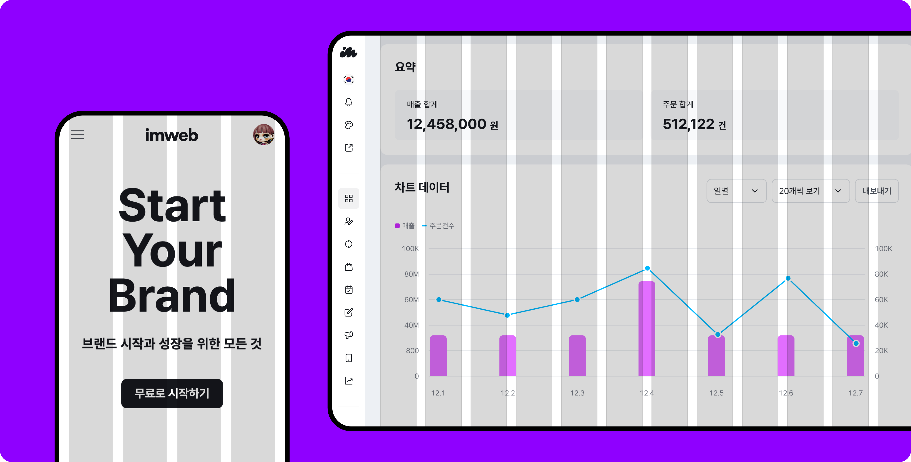
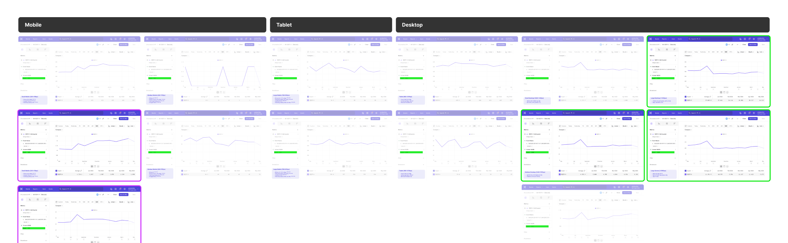
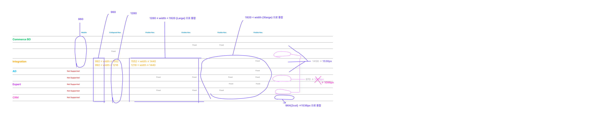
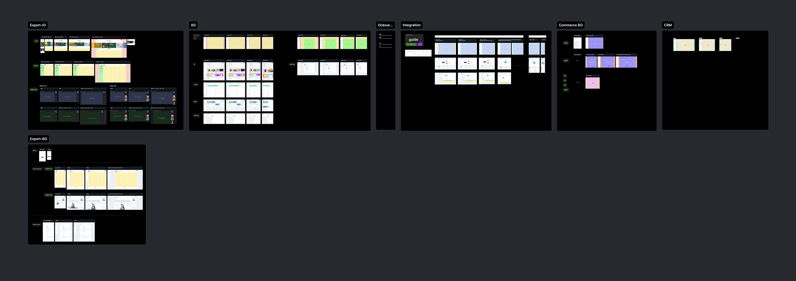
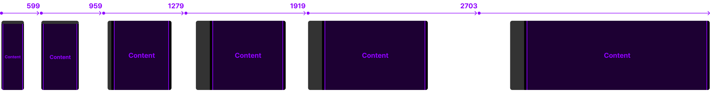
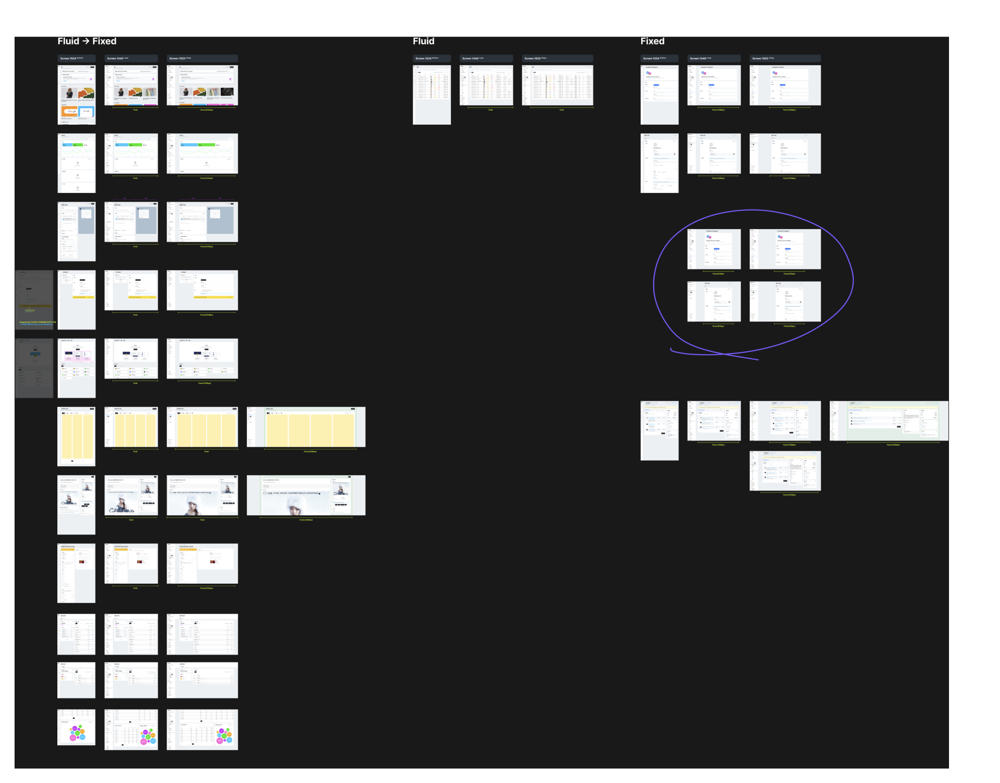

Overview 개요
기존 제품과 시스템의 모호한 정의로 인해 파편화된 Breakpoint와 Layout의 문제를 해결합니다. 일반적이거나 글로벌 기준에 맞추지 않고, 실제 사용자의 제품 환경 분석을 통해 사용자 경험을 최적화 합니다.
Collaborators 협업
Front-end engineer(2)
Goals 목표
Design Process 디자인 프로세스
데이터 분석
@Mixpanel
피드백 수집
Breakpoint
기준 설정
Layout
최적화
워크스페이스
통합
배포 및 적용
Testing, feedback and iteration
Research 연구
Mixpanel 데이터 분석 결과를 바탕으로 프로젝트 목표와 단계별 작업 내용을 정의했습니다.
사용자의 주요 화면 크기를 분석한 결과, 데스크탑 사용 비율이 89.9%임을 확인했습니다. 이에 따라 우리는 모바일 기준을 최소화하고, 데스크탑의 세분화된 Breakpoint를 만들기로 결정했습니다.
Total
55,434
Mobile
Tablet
Desktop

Collaborate with
Product Designers 디자이너 협업
프로덕트 디자이너들로부터 현재 사용 중인 Breakpoint와 Layout 기준에 대한 피드백을 수집했습니다.
Current by squad


Criteria Setting 공통 기준 정의
일관된 사용자 경험을 위해 총 6가지 공통 기준을 정의했습니다. 데스크탑 화면에서는 네가지의 Breakpoint(1279, 1919, 2703, 2704+)를 제공합니다.

Layout Optimization 레이아웃 최적화
최적화된 사용자 경험을 제공하기 위해 Layout을 재구성했습니다. 새로운 Breakpoint 기준에 맞춘 화면 크기별 그리드 시스템은 일관된 사용자 경험을 보장합니다.
기본적으로 컨테이너의 전체 너비를 차지하는 가변 그리드(Fluid)를 사용합니다. Fixed, Hybrid는 Large 이상의 Breakpoint에서 사용할 수 있습니다.
❶ Fluid grid
Fluid
❷ Fixed grid
Fixed
❸ Hybrid grid
Fluid + Fixed
Testing, feedback
and iteration 테스트 및 피드백
다양한 화면 크기에서 새로운 레이아웃을 테스트하여 일관된 사용자 경험을 보장하고, 필요한 경우 프로덕트 디자이너와 함께 추가 조정을 진행 했습니다.

Workspace integration 작업환경 표준화
360, 1024, 1440, 1920을 기본 스크린 사이즈로 설정하고, 필요에 따라 600과 3200 사이즈를 추가할 수 있도록 유연성을 부여했습니다.
360
600 (Optional)
1024
1440
1920
3200 (Optional)
Results and
Achievements 결과 및 성과
이 프로젝트는 실제 사용자 데이터를 기반으로 기준을 통합하고 최적화하여 사용자 경험을 개선하고 작업자의 효율을 크게 높이는데 기여했습니다.
필요에 따라 화면 크기를 추가할 수 있어 유연한 디자인 시스템을 제공할 수 있도록 했고, 디자이너들과 정기적인 피드백을 통해 Clay만의 Breakpoint와 그리드 시스템의 구축할 수 있었습니다. 또한 다양한 화면 크기에서도 일관된 사용자 경험을 제공할 수 있는 레이아웃을 최적화했습니다.